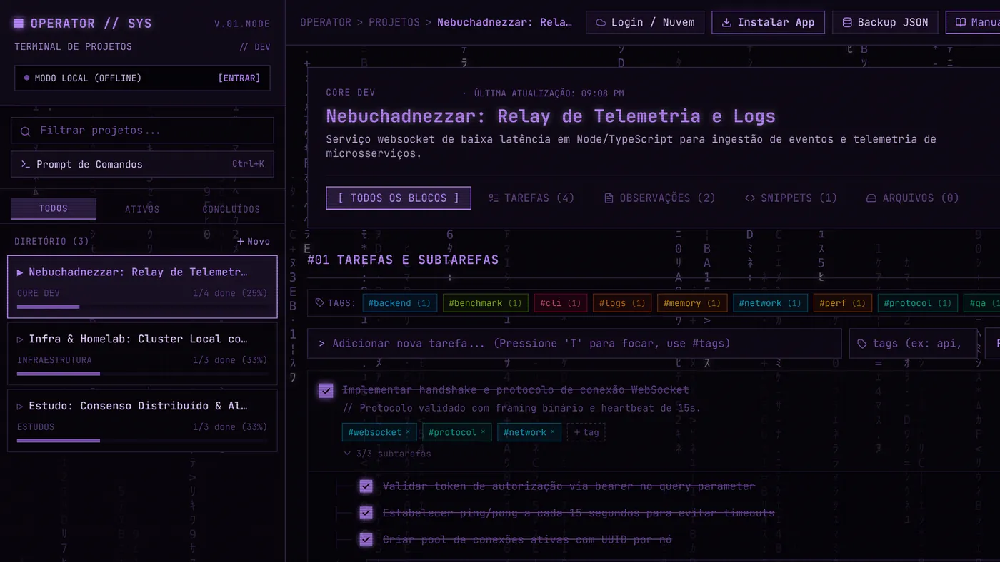
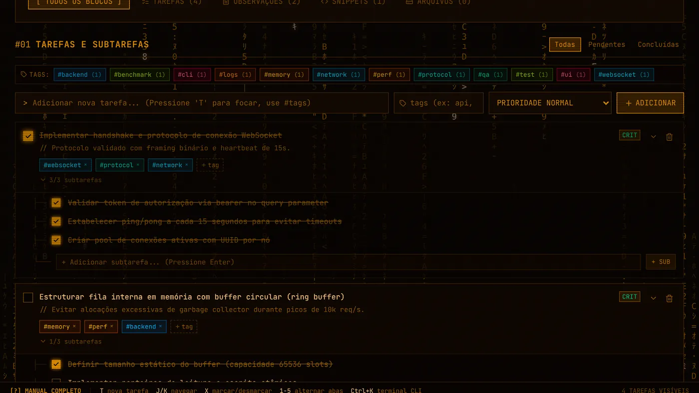
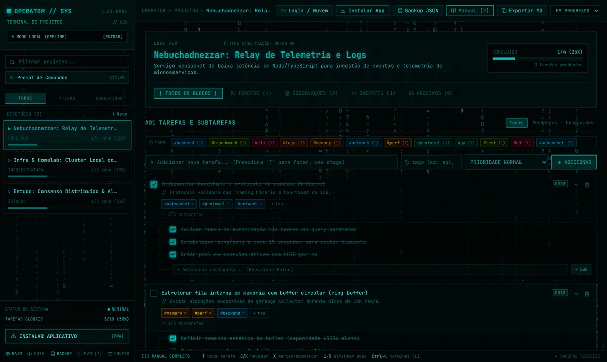
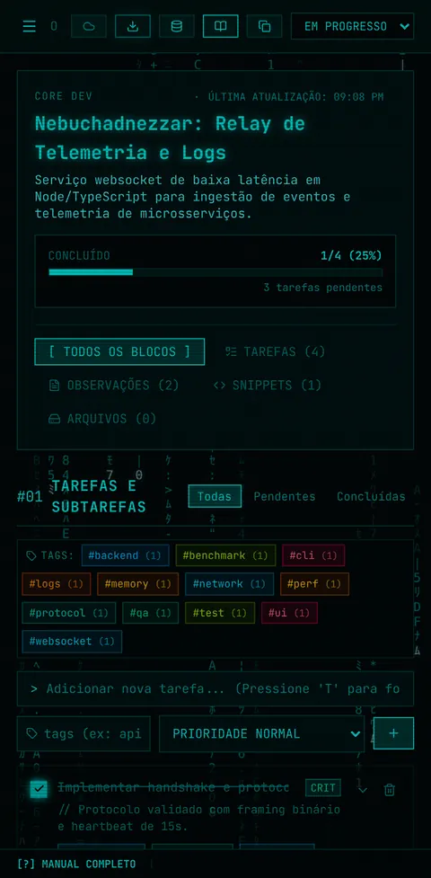

Your projects in a terminal
> git status
beta-launch: 1 of 3 tasks done (33%)
- Review landing page #marketing
- Record 30s demo #video
- Set up Supabase #infra


Tasks, notes and snippets, organized from the keyboard. Works offline, needs no account, and it’s free.
The prompt above works. Press Ctrl+K and type help.
From prompt to done
New
Record a 30s demo for the launch
In focus
Review landing page
Done
Set up Supabase and the attachments bucket
Let the Matrix rain fall behind the page.
A canvas at 30 frames per second that redraws only the cells that change. It’s falling behind this page right now.
Turn on the CRT scanlines.
A CSS layer over the screen with no processor cost. Turn it off to see the difference.
Hear a click on every command.
The sound comes from a Web Audio oscillator, with no audio file to download. Try it in the prompt up top.
Keep working when the internet drops.
Each change waits in a queue on your device and syncs on its own when you’re back online, even if you close the app.
Open the same project on your phone and PC.
Sign in with Google or email. Operator merges each project by its latest edit and shows at the top if anything is still pending.
All from Ctrl+K
First, create the project.
git init beta-launchNext, drop in tasks with tags.
+ review landing page #marketingreview landing page
Finally, install it on your phone.
install

Questions
Is Operator free?
Yes. The app, offline mode, the 8 themes and sync between devices cost nothing. Sync Pro will be an optional paid plan; if you skip it, you keep all of that.
Do I need an account?
No. Open the app and start. The account, with Google or email, only syncs your devices.
Where does my data live?
In your browser’s storage. If you sign in, a copy goes to a Supabase database where each account reads only its own projects. Attachments sit in a private bucket and open through links that expire after an hour.
Does it work offline?
Yes. After the first visit the app opens offline. Changes you make without a connection wait in a queue and sync when you’re back online.
Can I install it on my phone?
Yes. On Android, open it in Chrome and tap ⋮, then Install app. On iPhone, open it in Safari, tap Share and choose Add to Home Screen.
Can I take my data with me?
Yes. Backup downloads a .json file with every project, and the M key copies the open project as Markdown.
Is the code open source?
Yes, under the AGPL-3.0 license. The code is on GitHub and you can host your own copy.
What does Sync Pro add?
It’s still being defined. The plan is more room for attachments and features for people who use Operator every day. Join the waitlist above to get the invite when it opens.